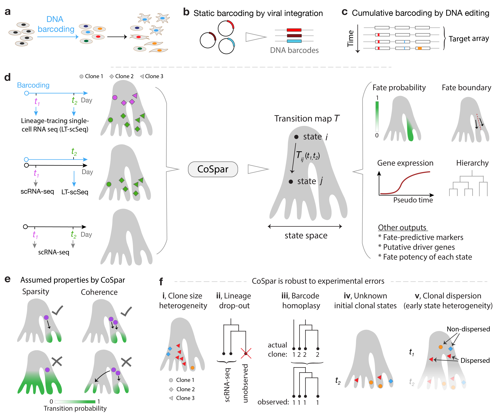
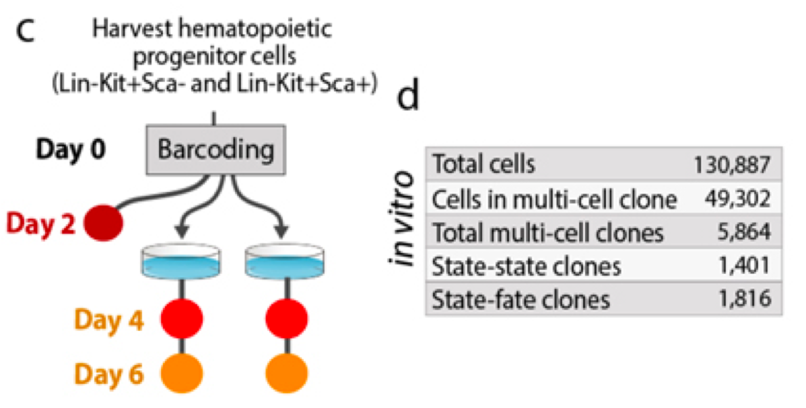
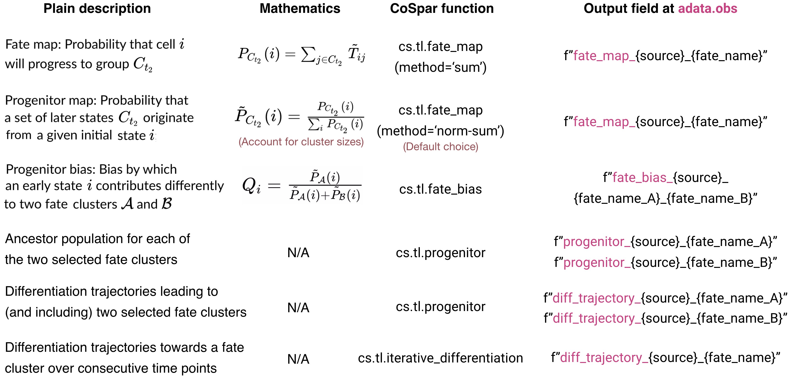

Lineage Tracing Analysis¶
Today, we will analyze sc lineage tracing data with CoSpar Wang et al 2022
Much of the tutorial today comes straight from CoSpar’s documentation

CoSpar Overview. The transition matrix T computed by maximum likelihood estimation.
</figure>
[1]:
#!pip3 install cospar
[2]:
import cospar as cs
import scanpy as sc
cs.settings.verbosity=2
[3]:
cs.settings.set_figure_params()
Data from Weinreb et al Science 2020.

Data collection strategy.
</figure>
[4]:
adata_orig = sc.read_h5ad("adata_cospar_hspc.h5ad")
Required slots in annData for CoSpar:
adata.X: state count matrix, shape (n_cell, n_gene). This should not be log-normalized.
adata.var_names: list of gene names, shape (n_genes,).
adata.obs[‘time_info’]: time annotation (type: str) for each cell, shape (n_cell,).
adata.obs[‘state_info’]: state annotation for each cell, shape (n_cell, 1). [Optional. Can be generated in preprocessing.
adata.obsm[‘X_clone’]: clonal labels for each cell in the form of np.array or sparse matrix, shape (n_cell, n_clone).
adata.obsm[‘X_pca’]: PCA matrix, shape (n_cell, n_pcs). [Optional. Can be generated in preprocessing.
adata.obsm[‘X_emb’]: two-dimensional embedding, shape (n_cell, 2). [Optional. Can be generated in preprocessing.
[5]:
cs.hf.set_up_folders() # NB we did not run this in lecture but will be necessary
[6]:
adata_orig
[6]:
AnnData object with n_obs × n_vars = 7438 × 25289
obs: 'time_info', 'state_info'
uns: 'clonal_time_points', 'data_des', 'state_info_colors', 'time_info_colors', 'time_ordering'
obsm: 'X_clone', 'X_emb', 'X_pca'
[7]:
sc.pl.pca(adata_orig, color='state_info', projection='3d')
[8]:
sc.pl.embedding(adata_orig, basis="emb",color="state_info")
[9]:
sc.pl.embedding(adata_orig, basis="emb",color=['Ccr7'])
[10]:
sc.pl.embedding(adata_orig, basis="emb",color=['time_info'])
We can examine the location of clones on embeddings
[11]:
cs.pl.clones_on_manifold(adata_orig,selected_clone_list=[151],color_list=['black','red','blue'])
[12]:
cs.pl.clones_on_manifold(adata_orig,selected_clone_list=[200],color_list=['black','red','blue'])
[13]:
cs.pl.clones_on_manifold(adata_orig,selected_clone_list=[0],color_list=['black','red','blue'])
How often are clones shared across cell types? This analysis done for given time point
[14]:
selected_times='4'
selected_fates=['Ccr7_DC','Mast','Meg','pDC','Eos','Lymphoid','Erythroid','Baso', 'Neutrophil', 'Monocyte']
cs.tl.fate_coupling(adata_orig,source='X_clone',selected_fates=selected_fates,selected_times=selected_times)
cs.pl.fate_coupling(adata_orig,source='X_clone')
Results saved as dictionary at adata.uns['fate_coupling_X_clone']
[14]:
<AxesSubplot:title={'center':'source: X_clone'}>
[15]:
selected_times='6'
selected_fates=['Ccr7_DC','Mast','Meg','pDC','Eos','Lymphoid','Erythroid','Baso', 'Neutrophil', 'Monocyte']
cs.tl.fate_coupling(adata_orig,source='X_clone',selected_fates=selected_fates,selected_times=selected_times)
cs.pl.fate_coupling(adata_orig,source='X_clone')
Results saved as dictionary at adata.uns['fate_coupling_X_clone']
[15]:
<AxesSubplot:title={'center':'source: X_clone'}>
We can look at barcode distributions across cell types, too
[16]:
selected_times='4'
selected_fates=['Ccr7_DC','Mast','Meg','pDC','Eos','Lymphoid','Erythroid','Baso', 'Neutrophil', 'Monocyte']
cs.pl.barcode_heatmap(adata_orig,selected_times=selected_times, selected_fates=selected_fates, color_bar=True)
Data saved at adata.uns['barcode_heatmap']
[16]:
<AxesSubplot:>
[17]:
adata=cs.tmap.infer_Tmap_from_multitime_clones(adata_orig,clonal_time_points=['2','4','6'],later_time_point='6',
smooth_array=[20,15,10],sparsity_threshold=0.2,max_iter_N=3)
Trying to set attribute `._uns` of view, copying.
------Compute the full Similarity matrix if necessary------
------Infer transition map between initial time points and the later time one------
--------Current initial time point: 2--------
Step 1: Select time points
Number of multi-time clones post selection: 185
Step 2: Optimize the transition map recursively
Load pre-computed similarity matrix
Iteration 1, Use smooth_round=20
Iteration 2, Use smooth_round=15
Iteration 3, Use smooth_round=10
Convergence (CoSpar, iter_N=3): corr(previous_T, current_T)=0.953
--------Current initial time point: 4--------
Step 1: Select time points
Number of multi-time clones post selection: 500
Step 2: Optimize the transition map recursively
Load pre-computed similarity matrix
Iteration 1, Use smooth_round=20
Iteration 2, Use smooth_round=15
Iteration 3, Use smooth_round=10
Convergence (CoSpar, iter_N=3): corr(previous_T, current_T)=0.974
-----------Total used time: 17.448920965194702 s ------------
[18]:
adata
[18]:
AnnData object with n_obs × n_vars = 7438 × 25289
obs: 'time_info', 'state_info'
uns: 'clonal_time_points', 'data_des', 'state_info_colors', 'time_info_colors', 'time_ordering', 'available_map', 'fate_coupling_X_clone', 'barcode_heatmap', 'Tmap_cell_id_t1', 'Tmap_cell_id_t2', 'clonal_cell_id_t1', 'clonal_cell_id_t2', 'sp_idx', 'transition_map', 'intraclone_transition_map'
obsm: 'X_clone', 'X_emb', 'X_pca'
[19]:
adata.uns['transition_map'].shape
[19]:
(3392, 4046)
Now, given an state, we can examine it’s likely trajectory using the transition matrix just computed
[20]:
selected_state_id_list=[1]
cs.pl.single_cell_transition(adata,selected_state_id_list=selected_state_id_list, color_bar=False,
source='transition_map',map_backward=False)
[21]:
selected_state_id_list=[100]
cs.pl.single_cell_transition(adata,selected_state_id_list=selected_state_id_list, color_bar=False,
source='transition_map',map_backward=False)
Similarly, we can compute transition profiles for end states (where did they originate)?
[22]:
selected_state_id_list=[9]
cs.pl.single_cell_transition(adata,selected_state_id_list=selected_state_id_list, color_bar=False,
source='transition_map',map_backward=True)
Now let’s examine a fate map. Given a cluster/state/end-point, where did it originate?
[23]:
cs.tl.fate_map(adata,selected_fates=['Neutrophil','Monocyte'],
source='transition_map',map_backward=True)
cs.pl.fate_map(adata,selected_fates=['Neutrophil'],
source='transition_map',plot_target_state=True,show_histogram=False)
Results saved at adata.obs['fate_map_transition_map_Neutrophil']
Results saved at adata.obs['fate_map_transition_map_Monocyte']
[24]:
cs.pl.fate_map(adata,selected_fates=['Monocyte'],
source='transition_map',plot_target_state=True,show_histogram=False)
Compute fate potency as the normalized sum of potential endpoints
[25]:
cs.tl.fate_potency(adata,source='transition_map',
map_backward=True,method='norm-sum',fate_count=True)
cs.pl.fate_potency(adata,source='transition_map')
Results saved at adata.obs['fate_map_transition_map_Mast']
Results saved at adata.obs['fate_map_transition_map_Erythroid']
Results saved at adata.obs['fate_map_transition_map_Ccr7_DC']
Results saved at adata.obs['fate_map_transition_map_Eos']
Results saved at adata.obs['fate_map_transition_map_Lymphoid']
Results saved at adata.obs['fate_map_transition_map_pDC']
Results saved at adata.obs['fate_map_transition_map_undiff']
Results saved at adata.obs['fate_map_transition_map_Baso']
Results saved at adata.obs['fate_map_transition_map_Monocyte']
Results saved at adata.obs['fate_map_transition_map_Neu_Mon']
Results saved at adata.obs['fate_map_transition_map_Meg']
Results saved at adata.obs['fate_map_transition_map_Neutrophil']
Results saved at adata.obs['fate_potency_transition_map']
Now let’s examine fate bias between two cell types/states/endpoints a and b. Computed as Pr(endstate = a) / Pr(endstate=a) + Pr(endstate=b)
[26]:
cs.tl.fate_bias(adata,selected_fates=['Neutrophil','Monocyte'],source='transition_map',pseudo_count=0,sum_fate_prob_thresh=0.1)
cs.pl.fate_bias(adata,selected_fates=['Neutrophil','Monocyte'],source='transition_map',plot_target_state=False,selected_times=['4'])
Results saved at adata.obs['fate_map_transition_map_Neutrophil']
Results saved at adata.obs['fate_map_transition_map_Monocyte']
Results saved at adata.obs['fate_bias_transition_map_Neutrophil*Monocyte']
Fate coupling from transition matrix
[27]:
selected_fates=['Ccr7_DC','Mast','Meg','pDC','Eos','Lymphoid','Erythroid','Baso', 'Neutrophil', 'Monocyte']
cs.tl.fate_coupling(adata,selected_fates=selected_fates,source='transition_map')
cs.pl.fate_coupling(adata,source='transition_map')
Results saved as dictionary at adata.uns['fate_coupling_transition_map']
[27]:
<AxesSubplot:title={'center':'source: transition_map'}>
[28]:
# compared to from clonal data alone
cs.tl.fate_coupling(adata,selected_fates=selected_fates,source='X_clone')
cs.pl.fate_coupling(adata,source='X_clone')
Results saved as dictionary at adata.uns['fate_coupling_X_clone']
[28]:
<AxesSubplot:title={'center':'source: X_clone'}>
Now reconstruct the hierarchy
[29]:
cs.tl.fate_hierarchy(adata,selected_fates=selected_fates,source='transition_map')
cs.pl.fate_hierarchy(adata,source='transition_map')
Results saved as dictionary at adata.uns['fate_hierarchy_transition_map']
/-Baso
/-|
/-| \-Eos
| |
/-| \-Mast
| |
| | /-Erythroid
| \-|
--| \-Meg
|
| /-Monocyte
| /-|
| | \-Neutrophil
\-|
| /-pDC
| /-|
\-| \-Ccr7_DC
|
\-Lymphoid
What distinguishes progenitors likely to become monocytes from those that are likely to become neutrophils?
[30]:
import numpy as np
cs.tl.progenitor(adata, selected_fates=['Neutrophil','Monocyte'],
source='transition_map', map_backward=True,
bias_threshold_A=0.5,bias_threshold_B=0.5, sum_fate_prob_thresh=0.2, avoid_target_states=True)
cs.pl.progenitor(adata, selected_fates=['Neutrophil','Monocyte'],
source='transition_map')
Results saved at adata.obs['fate_map_transition_map_Neutrophil']
Results saved at adata.obs['fate_map_transition_map_Monocyte']
Results saved at adata.obs['fate_bias_transition_map_Neutrophil*Monocyte']
Results saved at adata.obs[f'progenitor_transition_map_Neutrophil'] and adata.obs[f'diff_trajectory_transition_map_Neutrophil']
Results saved at adata.obs[f'progenitor_transition_map_Monocyte'] and adata.obs[f'diff_trajectory_transition_map_Monocyte']
note that resuls are stored as follows:
adata.obs[f'progenitor_{source}_{fate_name}']
adata.obs[f'diff_trajectory_{source}_{fate_name}']
[31]:
cell_group_A=np.array(adata.obs['diff_trajectory_transition_map_Neutrophil'])
cell_group_B=np.array(adata.obs['diff_trajectory_transition_map_Monocyte'])
dge_gene_A, dge_gene_B=cs.tl.differential_genes(adata,cell_group_A=cell_group_A,cell_group_B=cell_group_B,FDR_cutoff=0.05)
[32]:
dge_gene_A
[32]:
| index | gene | Qvalue | mean_1 | mean_2 | ratio | |
|---|---|---|---|---|---|---|
| 0 | 5 | Mmp8 | 0.000000e+00 | 0.563468 | 11.657158 | -3.017132 |
| 1 | 1 | Wfdc17 | 0.000000e+00 | 0.078693 | 7.124163 | -2.912935 |
| 2 | 9 | Lpl | 2.733934e-267 | 0.240403 | 8.100443 | -2.875127 |
| 3 | 10 | Fabp5 | 1.209024e-246 | 1.652049 | 15.526230 | -2.639579 |
| 4 | 3 | Psap | 0.000000e+00 | 1.660915 | 14.049889 | -2.499758 |
| ... | ... | ... | ... | ... | ... | ... |
| 1067 | 2060 | H3f3a | 7.928128e-04 | 4.989668 | 5.169685 | -0.042721 |
| 1068 | 3290 | AB124611 | 4.108763e-02 | 0.605892 | 0.648909 | -0.038136 |
| 1069 | 3124 | Tmpo | 3.081903e-02 | 0.922378 | 0.929656 | -0.005451 |
| 1070 | 2697 | Ffar2 | 1.080521e-02 | 0.608486 | 0.609789 | -0.001169 |
| 1071 | 2857 | Nom1 | 1.716971e-02 | 0.235725 | 0.236709 | -0.001149 |
1072 rows × 6 columns
[33]:
dge_gene_B
[33]:
| index | gene | Qvalue | mean_1 | mean_2 | ratio | |
|---|---|---|---|---|---|---|
| 0 | 36 | Ngp | 5.649159e-144 | 54.840271 | 0.418010 | 5.299366 |
| 1 | 33 | S100a9 | 1.356053e-148 | 80.231552 | 8.239202 | 3.136200 |
| 2 | 38 | S100a8 | 1.789692e-139 | 48.096233 | 8.031301 | 2.442606 |
| 3 | 21 | Elane | 8.662786e-184 | 8.812663 | 1.012724 | 2.285495 |
| 4 | 222 | Camp | 2.724041e-46 | 4.027065 | 0.032162 | 2.284047 |
| ... | ... | ... | ... | ... | ... | ... |
| 2320 | 3044 | Tex261 | 2.636864e-02 | 0.307811 | 0.299247 | 0.009477 |
| 2321 | 3154 | Ndufs4 | 3.271385e-02 | 0.158712 | 0.151988 | 0.008397 |
| 2322 | 2164 | Bub1b | 1.311236e-03 | 0.291533 | 0.285507 | 0.006747 |
| 2323 | 3128 | Socs2 | 3.108334e-02 | 0.247205 | 0.242337 | 0.005642 |
| 2324 | 3392 | Trpm7 | 4.928712e-02 | 0.231395 | 0.227887 | 0.004117 |
2325 rows × 6 columns
[34]:
sc.pl.embedding(adata, basis="emb",color=['Mmp8', 'Ngp'])
[35]:
gene_list=list(dge_gene_A['gene'][:20])+list(dge_gene_B['gene'][:20]) #select the top 20 genes from both populations
selected_fates=['Neutrophil','Monocyte',['Baso','Eos','Erythroid','Mast','Meg'],['pDC','Ccr7_DC','Lymphoid']]
renames=['Neu','Mon','Meg-Ery-MBaE','Lym-Dc']
gene_expression_matrix=cs.pl.gene_expression_heatmap(adata,selected_genes=gene_list,selected_fates=selected_fates,
rename_fates=renames,fig_width=12)
To identify undifferentiated cells that are biased towards either of these lineages, do the following:
[36]:
cell_group_A=np.array(adata.obs['progenitor_transition_map_Neutrophil'])
cell_group_B=np.array(adata.obs['progenitor_transition_map_Monocyte'])
Perform differential gene expression analysis between these two groups of undiff cells. You may need to adjust FDR_cutoff.
[37]:
dge_gene_A, dge_gene_B=cs.tl.differential_genes(adata,cell_group_A=cell_group_A,cell_group_B=cell_group_B,FDR_cutoff=0.05)
[38]:
dge_gene_A
[38]:
| index | gene | Qvalue | mean_1 | mean_2 | ratio | |
|---|---|---|---|---|---|---|
| 0 | 16 | Ly6a | 9.039739e-11 | 0.304916 | 1.487901 | -0.930972 |
| 1 | 113 | Cd74 | 8.016464e-04 | 0.049357 | 0.590306 | -0.599799 |
| 2 | 265 | Lpl | 1.855205e-02 | 0.514680 | 1.288570 | -0.595433 |
| 3 | 15 | Ifi203 | 3.450286e-11 | 0.263296 | 0.855959 | -0.554973 |
| 4 | 129 | Ctsc | 1.435103e-03 | 1.143432 | 2.044259 | -0.506169 |
| ... | ... | ... | ... | ... | ... | ... |
| 83 | 241 | Nrros | 1.383268e-02 | 1.127532 | 1.403783 | -0.176126 |
| 84 | 115 | Rps23 | 8.607369e-04 | 11.237831 | 12.805717 | -0.173918 |
| 85 | 221 | Rpl7 | 1.126278e-02 | 6.221563 | 6.941932 | -0.137179 |
| 86 | 264 | mt-Nd1 | 1.835382e-02 | 33.804676 | 36.876221 | -0.122011 |
| 87 | 314 | Rpl4 | 3.784367e-02 | 8.111238 | 8.714950 | -0.092559 |
88 rows × 6 columns
[39]:
dge_gene_B
[39]:
| index | gene | Qvalue | mean_1 | mean_2 | ratio | |
|---|---|---|---|---|---|---|
| 0 | 61 | S100a9 | 3.328465e-05 | 2.505955 | 0.577988 | 1.151722 |
| 1 | 46 | S100a8 | 3.593216e-06 | 2.456529 | 0.629346 | 1.085031 |
| 2 | 3 | Elane | 8.796332e-27 | 5.110261 | 1.924245 | 1.063170 |
| 3 | 1 | Gstm1 | 5.398384e-28 | 3.022064 | 0.980477 | 1.022088 |
| 4 | 2 | Mpo | 9.856078e-28 | 2.592695 | 0.801986 | 0.995479 |
| ... | ... | ... | ... | ... | ... | ... |
| 249 | 266 | Hdlbp | 1.902594e-02 | 0.445726 | 0.342975 | 0.106362 |
| 250 | 318 | Adrbk1 | 3.892046e-02 | 0.552127 | 0.445955 | 0.102224 |
| 251 | 339 | Cebpa | 4.920242e-02 | 0.292482 | 0.204556 | 0.101643 |
| 252 | 270 | Canx | 1.991304e-02 | 0.748365 | 0.635935 | 0.095892 |
| 253 | 329 | Pcgf5 | 4.420974e-02 | 0.150279 | 0.077339 | 0.094511 |
254 rows × 6 columns
[40]:
sc.pl.embedding(adata, basis="emb",color=['Ly6a', 'S100a9'])
Here is a summary of the functions:

CoSpar function summary.
</figure>